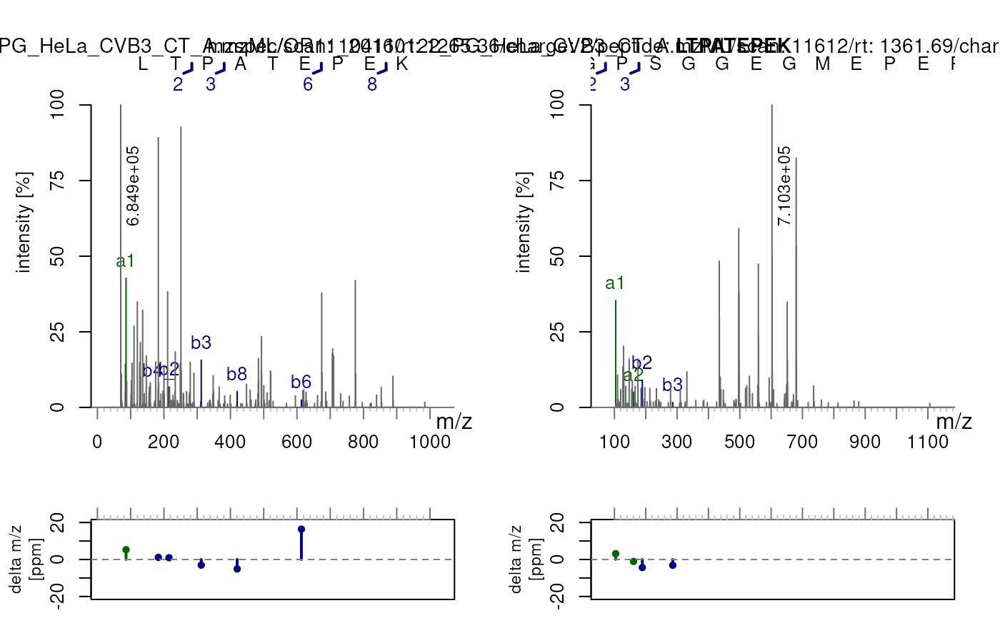
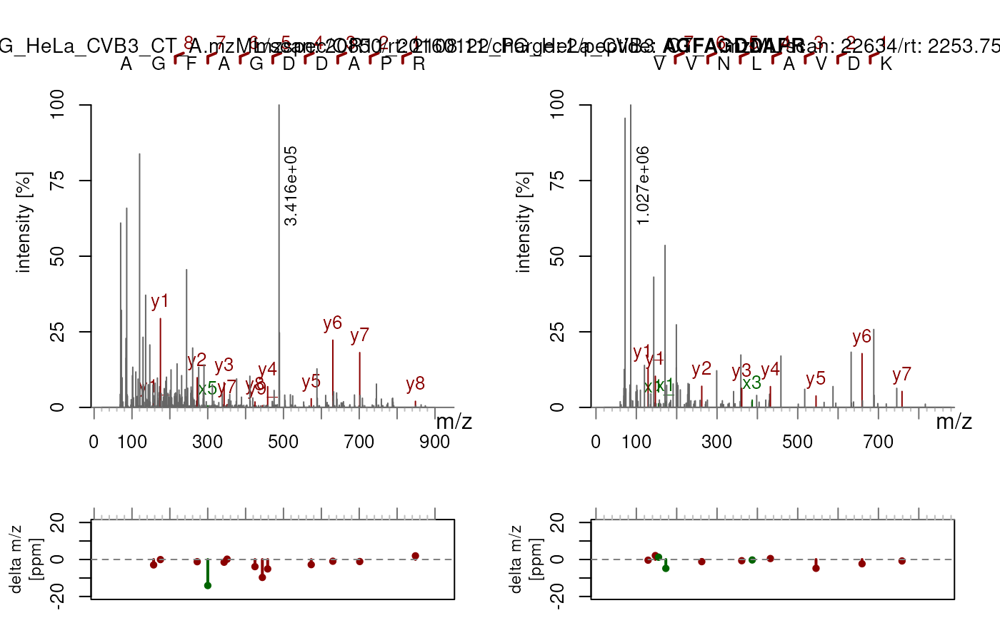
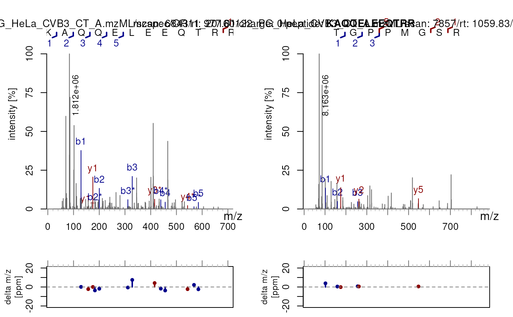
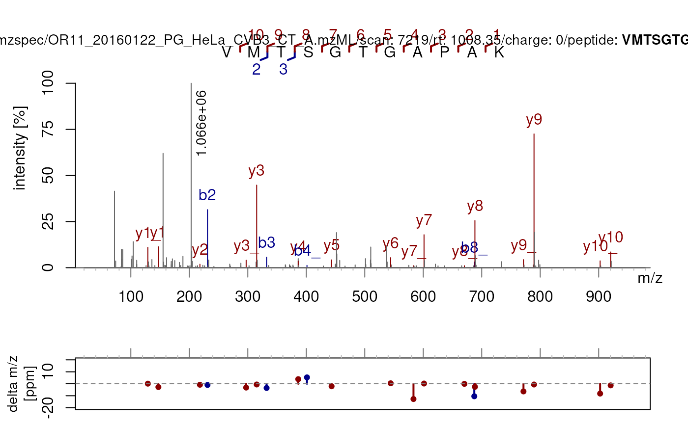

Validate a PSM by checking some of its spectral features. Calling
validatePSM() applies the different checks mentioned below. Failing a check
does not guarantee a bad identification per se, but it does provide
information to assess the confidence in dubious PSMs or confirm already good
identifications. The checks can be called individually too. Some can only be
applied on MS2 spectra, some need both MS1 and MS2 spectra. Use
Spectra::filterMsLevel() accordingly.
Usage
validatePSM(x, peptideVariable = "peptide", fdr = "fdr", ...)
checkABpresence(x, fragments = NULL)
checkXYpresence(x, fragments = NULL)
checkOverlap(
x,
peptideVariable = "peptide",
fragments = NULL,
strippedSeq = NULL
)
checkShiftConsistency(
x,
peptideVariable = "peptide",
fragments = NULL,
strippedSeq = NULL
)
checkParentIonIntensity(x, peaks = NULL, tolerance = 0, ppm = 20)
checkPrecursorPurity(
x,
tolerance = 0.05,
ppm = 0,
useReportedIsolationWindow = FALSE,
BPPARAM = BiocParallel::SerialParam()
)Arguments
- x
A
Spectraobject containing both MS1 and MS2 spectra from the same run(s). MS1 spectra are used as the source for isolation window peak data; each MS2 is paired with the nearest preceding MS1 scan (sorted by retention time within eachdataOrigin).- peptideVariable
A
characterof length 1L, representing the peptide sequence for that identification.- fdr
A
characterof length 1L, representing the FDR value for that identification.- ...
Arguments passed down to
checkParentIonIntensity()- fragments
The result of
labelFragments()onx.- strippedSeq
The canonical sequences. Should be the same length as
peptideVariable.- peaks
The spectrum peak data (result from
Spectra::peaksData()).- tolerance
Numeric(1)Absolute m/z half-width (in Da) of the isolation window used whenuseReportedIsolationWindow = FALSE(default0.05).- ppm
Numeric(1)Additional m/z-proportional tolerance (in ppm) added totolerancewhen defining the isolation window (default 0).- useReportedIsolationWindow
logical(1)IfTRUE, use theisolationWindowLowerMz/isolationWindowUpperMzmetadata stored in the spectra rather than computing the window fromtoleranceandppm. Defaults toFALSE.- BPPARAM
A
BiocParallelParaminstance controlling parallel evaluation (one job per uniquedataOrigin). Defaults toBiocParallel::SerialParam().
Value
A data.frame() that checks the different validation metrics.
checkABpresence() : TRUE if the a2-b2 fragments are both present.
checkXYpresence() : TRUE if the x2-y2 fragments are both present.
checkOverlap() : Detects a gap in the coverage of b- and y-ions.
Returns FALSE when a gap is found (b- and y-ions do not jointly cover the
full sequence), which may indicate an unsearched modification. Returns
TRUE when b- and y-ions overlap, further confirming the identification.
checkShiftConsistency() : In case of modifications present:
returns the percentage of potential mass shifts actually matched. If not
applicable because there are no modifications: NA.
checkParentIonIntensity() : The relative intensity of the parent
ion over the base peak. A value close to 1 indicates poor fragmentation.
checkPrecursorPurity() returns a numeric vector of length
length(x). Each value is the ratio of the most-intense peak to the
total intensity within the isolation window of the corresponding MS1 scan,
as computed by Spectra::precursorPurity(). MS1 spectra and MS2 spectra
with no preceding MS1 scan return NA.
Examples
library(Spectra)
data("psmBoekweg")
data("spBoekweg")
## Make sure you can join both using `joinSpectraData`:
head(psmBoekweg$pkey <- paste0(basename(psmBoekweg$filename),
sub("^.+scan=", "::", psmBoekweg$scannr)))
#> [1] "OR11_20160122_PG_HeLa_CVB3_CT_A.mzML::124613"
#> [2] "OR11_20160122_PG_HeLa_CVB3_CT_A.mzML::32698"
#> [3] "OR11_20160122_PG_HeLa_CVB3_CT_A.mzML::85610"
#> [4] "OR11_20160122_PG_HeLa_CVB3_CT_A.mzML::124591"
#> [5] "OR11_20160122_PG_HeLa_CVB3_CT_A.mzML::124193"
#> [6] "OR11_20160122_PG_HeLa_CVB3_CT_A.mzML::52322"
head(spBoekweg$pkey <- paste0(basename(spBoekweg$dataOrigin),
sub("^.+scan=", "::", spBoekweg$spectrumId)))
#> [1] "OR11_20160122_PG_HeLa_CVB3_CT_A.mzML::6404"
#> [2] "OR11_20160122_PG_HeLa_CVB3_CT_A.mzML::6405"
#> [3] "OR11_20160122_PG_HeLa_CVB3_CT_A.mzML::6833"
#> [4] "OR11_20160122_PG_HeLa_CVB3_CT_A.mzML::6843"
#> [5] "OR11_20160122_PG_HeLa_CVB3_CT_A.mzML::7218"
#> [6] "OR11_20160122_PG_HeLa_CVB3_CT_A.mzML::7219"
sp <- Spectra::joinSpectraData(spBoekweg, psmBoekweg, by.x = "pkey")
## Add carbamidomethylation or other modifications if need be
## See ?PTMods::addFixedModifications
## Define the peptideVariable and fdr column names
(seq <- psmVariables(psmBoekweg)[["peptide"]])
#> [1] "peptide"
(fdr <- psmVariables(psmBoekweg)[["fdr"]])
#> [1] "spectrum_q"
## Keep only those spectra for which we have an identification and their
## corresponding MS1
scans_seq <- precScanNum(sp[!is.na(sp[[seq]])])
sp <- filterPrecursorScan(sp, scans_seq)
sp$sequence <- sp$peptide ## add 'sequence' for plotSpectraPTM
## Keep a subset with only MS2 spectra
sp_ms2 <- filterMsLevel(sp, 2L)
sp_ms2 <- sp[!is.na(sp$sequence)]
## All checks at once with validatePSM()
validatePSM(sp[1:20], peptideVariable = seq, fdr = fdr)
#> spectrumId scanIndex
#> 1 controllerType=0 controllerNumber=1 scan=6405 6405
#> 2 controllerType=0 controllerNumber=1 scan=6843 6843
#> 3 controllerType=0 controllerNumber=1 scan=7219 7219
#> 4 controllerType=0 controllerNumber=1 scan=7857 7857
#> 5 controllerType=0 controllerNumber=1 scan=7982 7982
#> 6 controllerType=0 controllerNumber=1 scan=8869 8869
#> 7 controllerType=0 controllerNumber=1 scan=10217 10217
#> 8 controllerType=0 controllerNumber=1 scan=10411 10411
#> 9 controllerType=0 controllerNumber=1 scan=11612 11612
#> 10 controllerType=0 controllerNumber=1 scan=12193 12193
#> peptide canonicalSeq fdr a2b2 x2y2 byOverlap
#> 1 RPLEDGDQPDAKK RPLEDGDQPDAKK 3.777505e-05 FALSE FALSE TRUE
#> 2 KAQQELEEQTRR KAQQELEEQTRR 3.894081e-04 FALSE FALSE FALSE
#> 3 VMTSGTGAPAK VMTSGTGAPAK 1.972075e-05 TRUE FALSE TRUE
#> 4 TGPPMGSR TGPPMGSR 2.828365e-03 TRUE FALSE TRUE
#> 5 DLEADEEDTRKK DLEADEEDTRKK 1.972075e-05 TRUE FALSE TRUE
#> 6 AIQLNEVR AIQLNEVR 8.800279e-03 FALSE FALSE FALSE
#> 7 VIQHNALEDR VIQHNALEDR 1.972075e-05 TRUE FALSE TRUE
#> 8 LTPATEPEK LTPATEPEK 3.664146e-02 FALSE FALSE TRUE
#> 9 MGPSGGEGMEPERR MGPSGGEGMEPERR 1.972075e-05 TRUE FALSE TRUE
#> 10 EEAGPM[+15.994]LAATPFVK EEAGPMLAATPFVK 6.631032e-02 FALSE FALSE FALSE
#> shiftConsistency parentIonInt precursorPurity
#> 1 NA 0.0000000 1.0000000
#> 2 NA 0.0000000 0.9457250
#> 3 NA 0.1120444 1.0000000
#> 4 NA 0.0000000 0.8622428
#> 5 NA 1.0000000 1.0000000
#> 6 NA 0.8155594 0.9384059
#> 7 NA 0.0000000 0.6702247
#> 8 NA 0.2339044 0.6416998
#> 9 NA 0.1584306 1.0000000
#> 10 0.1538462 0.0000000 1.0000000
checkABpresence(sp[c(16, 18)])
#> LTPATEPEK MGPSGGEGMEPERR
#> FALSE TRUE
plotSpectraPTM(sp[c(16, 18)], type = c("a","b")) ## See the coloured peaks

checkXYpresence(sp_ms2[c(23, 24)])
#> AGFAGDDAPR VVNLAVDK
#> FALSE FALSE
plotSpectraPTM(sp_ms2[c(23, 24)], type = c("x","y"))

## Sparse fragment coverage -> gap detected (FALSE)
checkOverlap(sp_ms2[c(2, 4)]) ## FALSE and TRUE respectively
#> [1] FALSE TRUE
## Visualise it with plotSpectraPTM()
plotSpectraPTM(sp_ms2[c(2, 4)])

## checkShiftConsistency() on a sequence without modifications gives NA
checkShiftConsistency(sp_ms2[10], "sequence")
#> [1] 0.1538462
## checkShiftConsistency() on a modified sequence gives a value between 0-1
checkShiftConsistency(sp_ms2[3], "sequence")
#> [1] NA
plotSpectraPTM(sp_ms2[3])

## Precursor ion is the most intense peak -> ratio of 1
checkParentIonIntensity(sp_ms2[8])
#> [1] 0.2339044
## Precursor absent from spectrum -> ratio of 0
checkParentIonIntensity(sp_ms2[1]) ## Full fragmentation of precursor ion
#> [1] 0
## Check precursor purity on an ordered spectrum object: MS1 followed by MS2
msLevel(sp[5:6])
#> [1] 1 2
checkPrecursorPurity(sp[5:6])
#> [1] NA 1